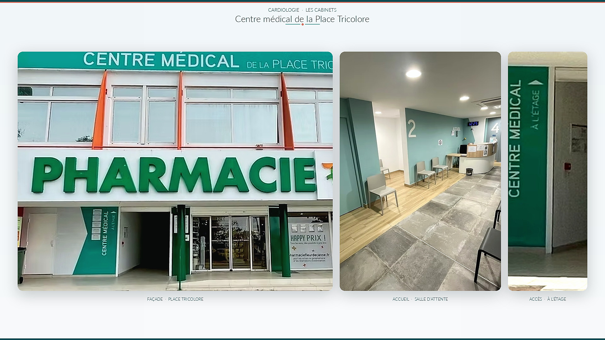

Consultation de cardiologie
Pour faire le point sur vos symptômes, vos antécédents et votre santé cardiovasculaire.
La Docteure Lucia Cespedes-Ocampo vous reçoit pour vos consultations de cardiologie, votre suivi et les examens réalisés au cabinet. Retrouvez les informations utiles, choisissez votre lieu de consultation et transmettez simplement votre demande de rendez-vous.
Transmettez votre demande en quelques minutes. Le secrétariat vous recontactera pour confirmer le rendez-vous ou vous proposer une autre disponibilité.
Indiquez le motif de consultation, le cabinet souhaité et vos coordonnées. Les créneaux affichés dans cette prévisualisation ne constituent pas des disponibilités réelles.
Demander un rendez-vous Image d’illustration
Image d’illustrationUne consultation de cardiologie ne se résume pas à un examen. Elle commence par l’écoute de vos préoccupations, de vos antécédents et de ce que vous ressentez.
La Docteure Lucia Cespedes-Ocampo veille à vous apporter des explications compréhensibles et à vous guider dans votre suivi. Le site vous aide simplement à préparer votre venue, retrouver les informations utiles et contacter le cabinet.
Découvrez les consultations et examens proposés au cabinet, ainsi que les informations utiles pour préparer votre venue.
Pour faire le point sur vos symptômes, vos antécédents et votre santé cardiovasculaire.
Un examen simple permettant d’enregistrer l’activité électrique du cœur.
Un examen d’imagerie permettant d’observer le fonctionnement et les structures du cœur.
Des repères adaptés pour mieux comprendre et protéger votre santé cardiovasculaire.
Adresse, accès, stationnement et itinéraire : retrouvez les informations utiles avant votre rendez-vous.
4127 Route de Abdon Saman – Perrin
97111 Morne-à-l’Eau
Route du nouveau CHU direction Perrin. Deuxième dos d’âne, face à l’épicerie Gamby.

Place Tricolore — 88J3+W89
Av. Sainte-Rose de Lima
97115 Sainte-Rose, Guadeloupe
Les informations de stationnement, de transports et d’accessibilité seront complétées après validation.
Des ressources simples pour préparer votre consultation, comprendre les examens et adopter de bons repères. Les contenus médicaux définitifs seront relus et validés par la docteure.
Retrouvez les documents utiles et les informations pratiques avant de venir.
Des repères simples pour organiser vos mesures à domicile.
Découvrez ce que cet examen enregistre et comment il se déroule.
Activité, alimentation et habitudes de vie expliquées simplement.
La règle dépend du motif de consultation. Les conditions définitives seront précisées après validation avec la docteure.
La confirmation rappellera les documents utiles selon le type de rendez-vous demandé.
Non. Il peut uniquement vous aider à retrouver les informations pratiques publiées sur le site.
Le fonctionnement définitif dépendra de l’agenda sélectionné par le cabinet.